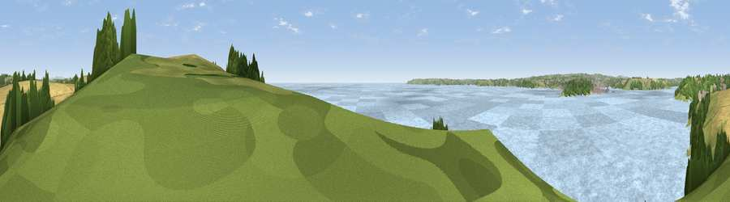

Viewpoint near Bohortha
#18561 in England · top 39% of its area beats it · near BohorthaWhere it is
The exact computed spot (SW 84714 31197). Click the marker for map links.
The view, rendered

A 360° render of this exact spot computed from the terrain model, tree cover and land cover — summer colours, afternoon light, calibrated against photographs of famous viewpoints. Real trees, hedges and buildings will differ in detail.
The panorama
Grey silhouette: terrain skyline in each direction (720 bearings, Earth curvature and refraction included). Dashed green: skyline with trees (+15 m) and buildings (+8 m) as obstacles. Blue strip: how far the ground is visible on each bearing.
Where the view opens
Wedge length = distance to the farthest visible ground on that bearing (vegetation-aware). Rings at 10, 25 and 50 km.
What fills the view
83% water · 10% woodland · 5% grassland · 2% cropland
Angular shares of the visible panorama (visual magnitude), not map area. Landscape diversity 0.28 (0–1 Shannon).
Key numbers
More beautiful places nearby
The staircase of upgrades: each row has a higher view potential than everything closer. Driving times are estimates from straight-line distance, calibrated against real road routing — check an actual route before setting out.
| Place | Direction | Drive | Score |
|---|---|---|---|
| Drake's Downs | ENE · 0 km | ~1 min | 71.9 |
| Viewpoint near St. Keverne | SW · 10 km | ~20 min | 72.2 |
| Viewpoint near Porthoustock | SSW · 11 km | ~20 min | 74.0 |
| Viewpoint near Portloe | NE · 15 km | ~27 min | 74.4 |
| Viewpoint near Lanner | NW · 16 km | ~28 min | 74.5 |
| Carn Brea | WNW · 19 km | ~32 min | 81.1 |
| St Agnes Beacon | NW · 23 km | ~38 min | 86.1 |
| Viewpoint near Foxhole | NNE · 26 km | ~42 min | 86.4 |
50.14167, -5.01434 · source: osm viewpoint · position refined by local search. Computed location — check access rights before visiting.